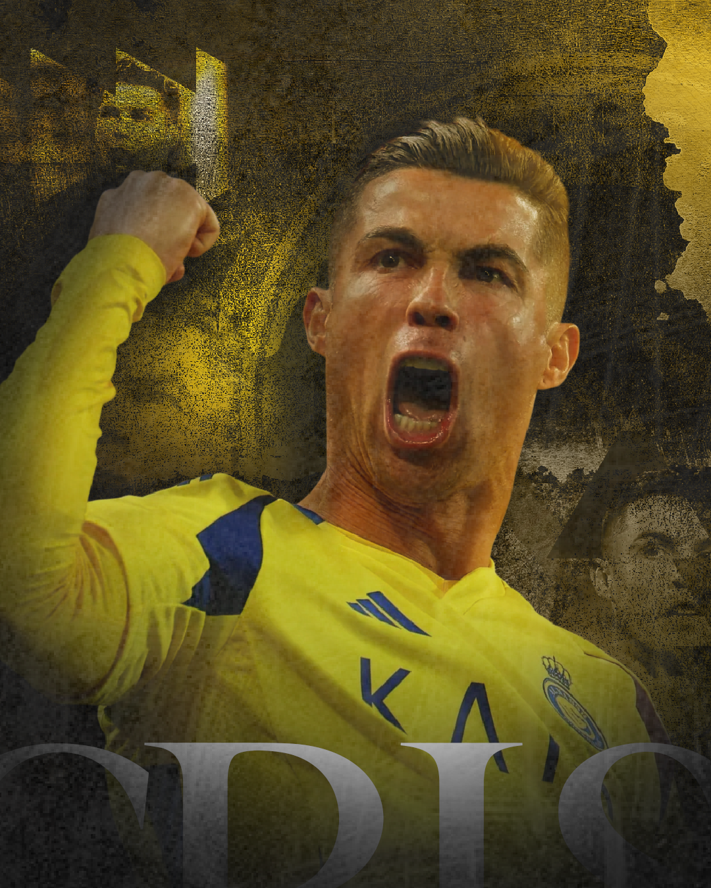

Sports Graphic Design – Professional Visuals for Teams and Athletes
If you are looking for a sports graphic designer, I am offering my services as a professional designer specialized in creating high-impact sports visuals. I develop custom designs for teams, athletes, and sports pages, focusing on engagement, visual identity, and professional presentation.

In today’s digital world, strong visual content is essential to stand out. Professional sports graphics help attract fans, increase engagement, and build a powerful presence on social media platforms.
Sports Designs for Social Media
I create optimized designs for Instagram, Facebook, and other platforms. Whether it’s match announcements, lineups, results, or transfers, every design is crafted to grab attention and communicate clearly.
A well-designed post not only looks good but also improves reach and interaction, helping teams grow their audience.
In addition to sports graphics, I also work with a wide range of design services for different business segments. I create professional social media designs tailored to each niche, helping brands maintain a consistent, attractive, and strategic visual identity across platforms like Instagram, Facebook, and more. Whether it’s for restaurants, clothing brands, local businesses, or personal brands, each design is developed to increase engagement, improve communication, and attract more customers.
I also offer logo vectorization services, converting low-quality images into high-resolution vector files that can be used in any size without losing quality. This is essential for printing, branding, uniforms, and digital use. In addition, I design professional business cards that help strengthen your brand identity and make your contact information clear, organized, and visually appealing, leaving a strong impression on clients and partners.
Professional Athlete Designs
Sports graphics can also be used to highlight individual athletes. For example, designs inspired by players like Cristiano Ronaldo often feature dynamic compositions, bold typography, and strong visual storytelling to emphasize performance and achievements.
This style can be applied to any athlete, helping build a personal brand and increase visibility online.
Types of Sports Graphics
- Match lineups
- Final score results
- Player announcements
- Transfer news
- Highlight posts
- Sports banners
Design Process
1. Information Gathering
You provide details such as team name, players, colors, and content ideas.
2. Visual Planning
I organize the layout to highlight the most important information clearly.
3. Design Creation
I create a custom and modern design focused on visual impact and clarity.
4. Revisions and Delivery
After your feedback, I make final adjustments and deliver the finished design ready to use.
FAQ
Do you create designs for amateur teams?
Yes, I work with amateur teams, sports pages, and professional projects.
Are the designs suitable for social media?
Yes, all designs are optimized for platforms like Instagram and Facebook.
Can I request different types of designs?
Yes, you can request multiple formats such as lineups, results, and announcements.
What do I need to get started?
To get started, I just need a few basic details about your project, such as your business name, the type of design you’re looking for, your preferred style (colors, references, or examples you like), and the platform where the design will be used (Instagram, Facebook, etc.). If you already have a logo, photos, or specific text, you can send those as well. Don’t worry if you’re not sure about everything yet — I can guide you through the process and help you define the best direction for your design.
Does professional design really make a difference?
Yes, high-quality design increases engagement, improves presentation, and strengthens your brand.
If you’re looking to elevate your brand with eye-catching, professional, and strategic designs that truly connect with your audience, I’m here to help you stand out and achieve better results on social media.
Looking to hire a professional? Check out my freelance graphic designer services .